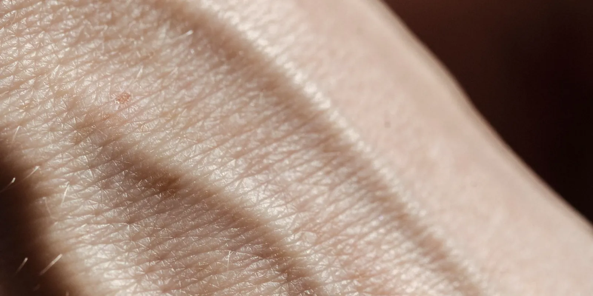

Piernas hinchadas por calor: por qué pasa y cómo aliviarlas
Si en época de calor sientes las piernas más hinchadas, pesadas o tensas, no eres la única: el calor tiene un efecto real sobre la circulación. Te contamos por qué pasa, cómo aliviarlo con hábitos sencillos y cuándo la hinchazón deja de ser solo cosa del clima.

Si notas que en época de calor tienes las piernas hinchadas por calor, más tensas o incluso te aprietan los zapatos y el elástico de las medias, no es tu imaginación. El calor hace que el cuerpo reaccione de una forma que, sumada a la gravedad, favorece que se acumule líquido en la parte baja de las piernas. Te contamos por qué pasa esto, cómo aliviarlo y cuándo conviene consultar.
Por qué el calor hace que se hinchen más las piernas
Cuando hace mucho calor, el cuerpo busca bajar su temperatura de dos formas: sudando y dilatando los vasos sanguíneos de la piel, un proceso llamado vasodilatación, para liberar calor hacia el exterior. Esa dilatación acerca más sangre a la superficie de la piel, pero también hace que salga más líquido desde los vasos pequeños hacia los tejidos que los rodean. Este exceso de líquido en los tejidos es lo que se conoce médicamente como edema.
En piernas sanas, las venas y los vasos linfáticos suelen drenar ese líquido extra sin mayor problema. Pero las piernas son la parte del cuerpo más alejada del corazón. Por eso, la sangre y el líquido tienen que vencer la gravedad para regresar, y el calor le suma trabajo extra a un sistema que ya de por sí se esfuerza.
Si ya tienes problemas de circulación, el calor se nota más
Cuando existe una insuficiencia venosa —es decir, las válvulas de las venas de las piernas ya no cierran del todo bien—, parte de la sangre se queda estancada en lugar de subir hacia el corazón. Eso aumenta la presión dentro de las venas y empuja todavía más líquido hacia los tejidos. Por eso, si convives con várices o con piernas pesadas de forma habitual, es normal que notes que los síntomas se disparan justo en los días o los meses más calurosos del año.
El sedentarismo y pasar muchas horas de pie o sentada en un mismo sitio —algo frecuente cuando el calor invita a moverse menos— tienden a sumarse a este efecto y a empeorar la hinchazón.
Cómo aliviar las piernas hinchadas por calor
La mayoría de las veces, unos cuidados sencillos son suficientes para sentir alivio:
- Enfría tus piernas. Una ducha o un chorro de agua fría en las pantorrillas, un par de veces al día, ayuda a que los vasos se contraigan y a bajar la hinchazón.
- Eleva las piernas por encima del nivel del corazón un rato al día, sobre todo al final de la jornada, para que el líquido regrese con más facilidad.
- Mantente hidratada. Tomar suficiente agua ayuda a que el cuerpo regule mejor los líquidos, en lugar de retenerlos.
- Evita el agua muy caliente en la ducha o la tina: tiene un efecto parecido al del calor ambiental y puede aumentar la hinchazón.
- Sigue moviéndote. Caminar activa la bomba muscular de la pantorrilla, que ayuda a que la sangre suba desde las piernas.
- Evita ropa y calzado muy ajustados que compriman tobillos, ingle o cintura.
- Considera medias de compresión graduada en los días de más calor, sobre todo si ya tienes antecedentes de piernas hinchadas o várices.
Muchos de estos hábitos son los mismos que recomendamos para cuidar la circulación en general. En nuestros 7 hábitos diarios para mejorar la circulación de tus piernas encuentras rutinas que puedes mantener todo el año. Y si vas a viajar en temporada de calor, te sirve también nuestra guía de piernas en viajes largos: cómo cuidarlas en avión o carro. La alimentación también influye en cómo responde tu cuerpo al calor: en alimentación y circulación: qué comer para cuidar tus piernas te contamos qué hábitos alimenticios acompañan mejor la salud venosa.
La hinchazón por calor suele afectar ambas piernas por igual, ser blanda y ceder con reposo, elevación y frío. Cuando la hinchazón aparece de un momento a otro en una sola pierna, y viene con dolor, calor local o enrojecimiento, la causa probable ya no es solo el clima.
Cuándo la hinchazón por calor no es solo calor
La mayor parte de las veces, la hinchazón que aparece con el calor es simétrica —se nota parecida en las dos piernas—, no duele demasiado y mejora con las medidas anteriores en poco tiempo. Pero hay señales que conviene tomar en serio, porque pueden indicar un problema circulatorio de fondo que merece valoración, o algo más urgente como una trombosis.
Si notas que tus piernas se hinchan más de lo esperado cada vez que sube la temperatura, o si la hinchazón ya no mejora con estas medidas, puedes agendar una valoración con nuestro equipo. Así revisamos cómo está tu circulación y qué opciones tienes para sentirte mejor durante todo el año.
Preguntas frecuentes
¿Por qué se hinchan más las piernas cuando hace calor?
Porque el calor dilata los vasos sanguíneos de la piel para ayudar al cuerpo a liberar temperatura, y esa dilatación favorece que salga más líquido hacia los tejidos de las piernas. Como las piernas están más alejadas del corazón, ese líquido extra tiende a acumularse por efecto de la gravedad, lo que se nota como hinchazón, sobre todo al final del día.
¿Cómo sé si la hinchazón es solo por el calor o hay un problema circulatorio?
La hinchazón por calor suele aparecer en las dos piernas por igual, es blanda y mejora con reposo, elevación de las piernas y frío local. Si en cambio la hinchazón es más marcada en una sola pierna, persiste, o se acompaña de dolor, pesadez importante o várices visibles, puede tratarse de una insuficiencia venosa que conviene valorar con un especialista.
¿Qué puedo hacer para aliviar la hinchazón por calor en las piernas?
Enfriar las piernas con agua fría, elevarlas por encima del corazón un rato al día, mantenerte hidratada, seguir moviéndote, evitar el agua muy caliente y la ropa ajustada, y usar medias de compresión en los días de más calor son medidas sencillas que suelen ayudar a bajar la hinchazón.
¿Es peligroso que se hinchen las piernas por el calor?
En general no. La hinchazón por calor es una respuesta normal del cuerpo y no suele ser peligrosa. Pero si la hinchazón aparece de golpe en una sola pierna, con dolor, calor local o enrojecimiento, o si sientes dificultad para respirar o dolor en el pecho, debes buscar atención médica pronto porque podrían ser señales de una trombosis venosa o una embolia pulmonar.